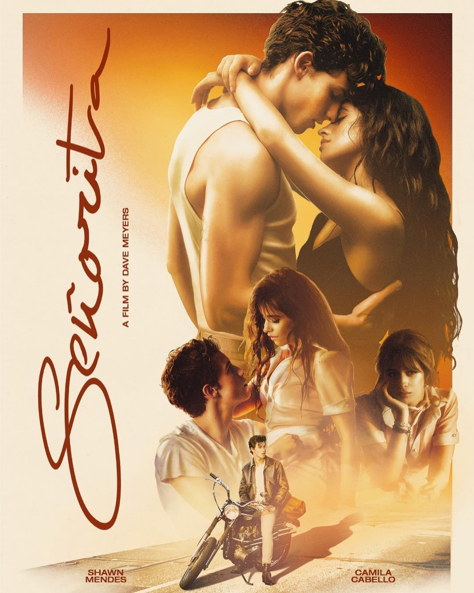

 |
SEÑORITA |
I love it when you call me señorita
I wish I could pretend I didn't need ya
But every touch is ooh, la-la-la
It's true, la-la-la
Ooh, I should be running
Ooh, you keep me coming for ya
Land in Miami
The air was hot from summer rain
Sweat dripping off me
Before I even knew her name, la-la-la
It felt like ooh, la-la-la
Yeah, no
Sapphire moonlight
We danced for hours in the sand
Tequila Sunrise
Her body fit right in my hands, la-la-la
It felt like ooh, la-la-la, yeah
I love it when you call me señorita
I wish I could pretend I didn't need ya
But every touch is ooh, la-la-la
It's true, la-la-la
Ooh, I should be running
Ooh, you know I love it when you call me señorita
I wish it wasn't so damn hard to leave ya
But every touch is ooh, la-la-la
It's true, la-la-la
Ooh, I should be running
Ooh, you keep me coming for ya
Locked in the hotel
There's just some things that never change
You say we're just friends
But friends don't know the way you taste, la-la-la
'Cause you know it's been a long time coming
Don't you let me fall, oh
Ooh, when your lips undress me
Hooked on your tongue
Ooh, love, your kiss is deadly
Don't stop
I love it when you call me señorita
I wish I could pretend I didn't need ya
But every touch is ooh, la-la-la
It's true, la-la-la
Ooh, I should be running
Ooh, you know I love it when you call me señorita
I wish it wasn't so damn hard to leave ya
But every touch is ooh, la-la-la
It's true, la-la-la (true, la-la)
Ooh, I should be running
Ooh, you keep me coming for ya
All along I've been coming for ya (for ya)
And I hope it meant something to ya (ooh)
Call my name, I'll be coming for ya
Coming for ya, coming for ya, coming for ya
For ya
For ya (oh, she loves it when I call)
For ya
Ooh, I should be running
Ooh, you keep me coming for ya
|
Cancion en Youtube |